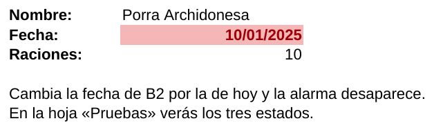
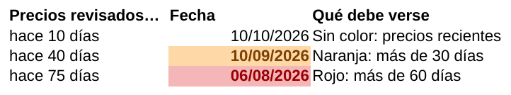

Estilos y formato condicional: alarma de antigüedad de los precios
Haz que la fecha de cada ficha se ponga naranja o roja cuando los precios del proveedor se queden viejos.
Estilos y formato condicional: alarma de antigüedad de los precios
🎯 El problema
Los precios del bloque Proveedor cambian: si la ficha se hizo hace meses, el escandallo calcula con precios viejos y el precio de venta puede quedarse corto. La celda B2 («Fecha:») de cada ficha guarda cuándo revisaste esos precios. Vamos a convertirla en una alarma:
- 🟧 Más de 30 días: fondo naranja («conviene revisar los precios»).
- 🟥 Más de 60 días: fondo rojo («precios caducados: no presupuestes sin revisarlos»).
- ⬜ Menos de 30 días: sin color.
Usaremos dos herramientas de Calc que trabajan juntas: los estilos de celda y el formato condicional.
1. Los estilos de celda
Un estilo es un formato con nombre (fondo, letra, números, bordes…) que se aplica de una vez. Si cambias el estilo, cambian todas las celdas que lo usan. En Calc, el formato condicional aplica estilos: por eso los creamos primero.
- Abre el panel de estilos: F11 (o Ver → Estilos) y elige el icono Estilos de celda.
- Clic derecho sobre Predeterminado → Nuevo…
- Pestaña Organizador → Nombre:
Precio antiguo. - Pestaña Fondo → Color → un naranja claro.
- Pestaña Efectos tipográficos → color de letra marrón oscuro; pestaña Tipo de letra → Negrita.
- Pestaña Números → Fecha → formato
DD/MM/AAAA, para que la fecha se siga viendo como fecha. → Aceptar. - Repite para
Precio caducadocon fondo rojo claro y letra roja oscura.
2. ¿Qué compara la alarma?
Para Calc una fecha es un número: los días transcurridos desde el 30/12/1899. Por eso se puede restar: AHORA()-30 es «hace 30 días».
B2 <= AHORA()-30La fecha de B2 es igual o anterior a la de hace 30 días → los precios tienen 30 días o más.B2 <= AHORA()-60Igual o anterior a la de hace 60 días → 60 días o más.AHORA() devuelve la fecha y la hora actuales y se actualiza sola al abrir el archivo o al recalcular (F9). También sirve HOY(), que da solo la fecha; para esta alarma el resultado es prácticamente el mismo.
3. El formato condicional paso a paso
- Haz clic en B2 de la hoja Entrante.
- Formato → Formato condicional → Condición…
- Condición 1: «El valor de la celda es» · «menor o igual que» · escribe
AHORA()-60· Aplicar estilo: Precio caducado. - Pulsa Añadir. Condición 2: «El valor de la celda es» · «menor o igual que» ·
AHORA()-30· Aplicar estilo: Precio antiguo. - Aceptar. Como la fecha del modelo es de enero de 2025, B2 se pondrá roja.
4. ¡El orden de las condiciones importa!
Calc comprueba las condiciones de arriba abajo y aplica la primera que se cumple. Una fecha de hace 75 días también es «≤ AHORA()-30». Si pusieras primero la de 30 días, se cumpliría siempre antes y nunca verías el rojo.
| Antigüedad | ¿≤ AHORA()-60? | ¿≤ AHORA()-30? | Orden correcto (60 → 30) | Orden al revés (30 → 60) |
|---|---|---|---|---|
| 10 días | No | No | Sin color | Sin color |
| 45 días | No | Sí | Naranja | Naranja |
| 75 días | Sí | Sí | Rojo ✅ | Naranja ❌ |
🧪 Simulador: ¿de qué color se pone B2?
Mueve la antigüedad de los precios y cambia el orden de las condiciones.
| A | B | |
|---|---|---|
| 1 | Nombre: | Porra Archidonesa |
| 2 | Fecha: | |
| 3 | Raciones: | 10 |
5. Resultado en Calc


6. Llevarlo a las cuatro fichas
- 🔓 Si protegiste las hojas en el módulo 12, primero Herramientas → Proteger hoja (quítalo); en una hoja protegida no se puede cambiar el formato. Vuelve a protegerla al terminar.
- 🖌️ Selecciona B2 de Entrante, pulsa Clonar formato (el pincel) y haz clic en B2 de Carne; repite en Pescado y Postre. El pincel copia también el formato condicional.
- 📋 Alternativa: copia B2 (Ctrl + C) y en la otra hoja Editar → Pegado especial → Solo formatos.
- 🔎 Para revisar o borrar reglas: Formato → Formato condicional → Gestionar…
- 🔄 Cuando revises los precios con el proveedor, pon la fecha de hoy en B2 con Ctrl + ;: la alarma se apaga.
=HOY()-60 → Formato… (relleno rojo). Crea otra regla igual con =HOY()-30 y relleno naranja. En Formato condicional → Administrar reglas, la de arriba tiene prioridad: deja la de 60 días encima (usa las flechas).🧩 El orden
Pones primero la condición «≤ AHORA()-30» (naranja) y después «≤ AHORA()-60» (rojo). Una ficha tiene precios de hace 90 días. ¿De qué color sale B2?
🧩 La fórmula
¿Qué significa la condición «El valor de la celda es menor o igual que AHORA()-30»?
🧩 Ventaja de los estilos
Quieres cambiar el rojo de la alarma por un rojo más intenso en las cuatro fichas. ¿Qué es lo más rápido?